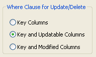

Previous Next
Specifying the WHERE clause for update/delete
Sometimes multiple users are accessing the same tables at
the same time. In these situations, you need to decide when to allow
your application to update the database. If you allow your application to
always update the database, it could overwrite changes made by other
users:

You can control when updates succeed by specifying which columns PowerBuilder includes
in the WHERE clause in the UPDATE or DELETE statement
used to update the database:
UPDATE table...
SET column = newvalue
WHERE col1 = value1
AND col2 = value2 ...
DELETE
FROM table
WHERE col1 = value1
AND col2 = value2 ...
 Using timestamps Some DBMSs maintain timestamps so you can ensure that users are
working with the most current data. If the SELECT statement
for the DataWindow object contains a timestamp column, PowerBuilder includes
the key column and the timestamp column in the WHERE clause
for an UPDATE or DELETE statement regardless
of which columns you specify in the Where Clause for Update/Delete
box.
Using timestamps Some DBMSs maintain timestamps so you can ensure that users are
working with the most current data. If the SELECT statement
for the DataWindow object contains a timestamp column, PowerBuilder includes
the key column and the timestamp column in the WHERE clause
for an UPDATE or DELETE statement regardless
of which columns you specify in the Where Clause for Update/Delete
box.
If the value in the timestamp column changes (possibly due
to another user modifying the row), the update fails.
To see whether you can use timestamps with
your DBMS, see Connecting to Your Database
.
Choose one of the options in Table 21-1 in the Where Clause for Update/Delete box.
The results are illustrated by an example following the table.
Table 21-1: Specifying the WHERE clause for
UPDATE and DELETE
| Option |
Result |
|---|
| Key Columns |
The WHERE clause includes
the key columns only. These are the columns you specified in the
Unique Key Columns box. The values in the originally retrieved key columns for the
row are compared against the key columns in the database. No other comparisons
are done. If the key values match, the update succeeds. Caution Be very careful when using this option. If you tell PowerBuilder only
to include the key columns in the WHERE clause
and someone else modified the same row after you retrieved it, their
changes will be overwritten when you update the database (see the
example following this table).
Use this option only with a single-user database or if you
are using database locking. In other situations, choose one of the
other two options described in this table. |
| Key and Updatable Columns |
The WHERE clause includes
all key and updatable columns. The values in the originally retrieved key columns and the originally
retrieved updatable columns are compared against the values in the
database. If any of the columns have changed in the database since
the row was retrieved, the update fails. |
| Key and Modified Columns |
The WHERE clause includes
all key and modified columns. The values in the originally retrieved key columns and the
modified columns are compared against the values in the database.
If any of the columns have changed in the database since the row
was retrieved, the update fails. |
Example
Consider this situation: a DataWindow object is updating the Employee table, whose
key is Emp_ID; all columns in the
table are updatable. Suppose the user has changed the salary of
employee 1001 from $50,000 to $65,000. This is what
happens with the different settings for the WHERE clause
columns:
- If you choose Key
Columns for the WHERE clause, the UPDATE statement looks
like this:
UPDATE Employee
SET Salary = 65000
WHERE Emp_ID = 1001
This statement will succeed regardless of whether
other users have modified the row since your application retrieved
the row. For example, if another user had modified the
salary to $70,000, that change will be overwritten when
your application updates the database.
- If you choose Key and Modified Columns for the WHERE clause,
the UPDATE statement looks like this:
UPDATE Employee
SET Salary = 65000
WHERE Emp_ID = 1001
AND Salary = 50000
Here the UPDATE statement is also checking
the original value of the modified column in the WHERE clause.
The statement will fail if another user changed the salary of employee
1001 since your application retrieved the row.
- If you choose Key and Updatable Columns for the WHERE clause,
the UPDATE statement looks like this:
UPDATE Employee
SET Salary = 65000
WHERE Emp_ID = 1001
AND Salary = 50000
AND Emp_Fname = original_value
AND Emp_Lname = original_value
AND Status = original_value
...
Here the UPDATE statement is checking all
updatable columns in the WHERE clause. This statement
will fail if any of the updatable columns for employee 1001 have
been changed since your application retrieved the row.